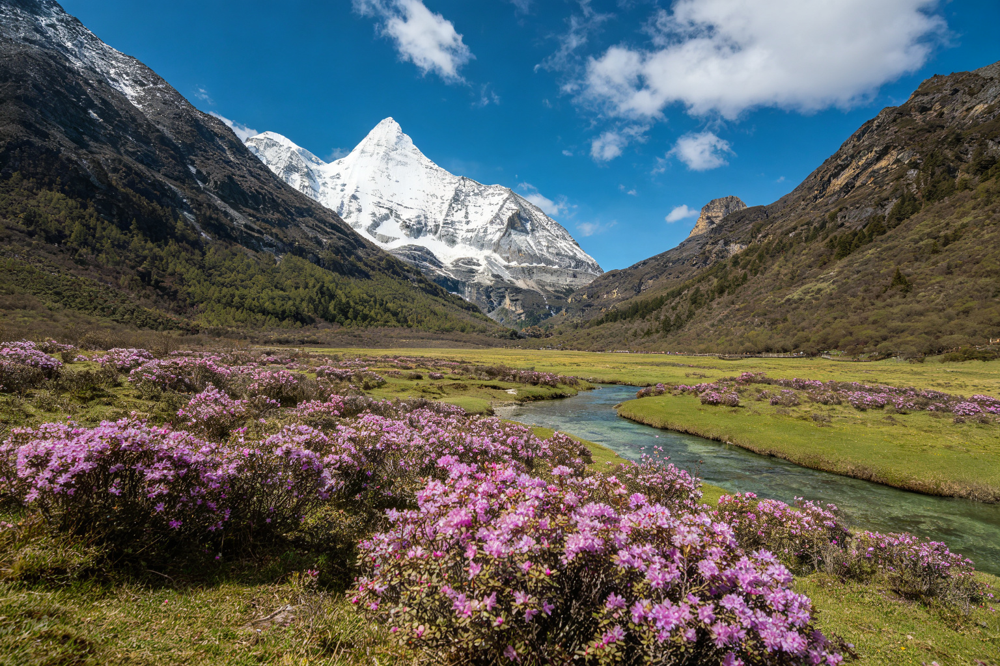
春约 4 月 – 6 月上旬 · 花季
冰雪消融，杜鹃花海
★★★★★
积雪渐融、草甸返青，4 月起野花次第开放，6 月中下旬迎来高山杜鹃最佳花期，雪山与花海同框。游客明显少于秋季，性价比高。
优势
- 人少清净、住宿便宜
- 杜鹃花海限定
- 雪山积雪仍较多
留意
- 早晚仍冷、需保暖
- 草色偏青黄未全绿
- 6 月后渐入雨季
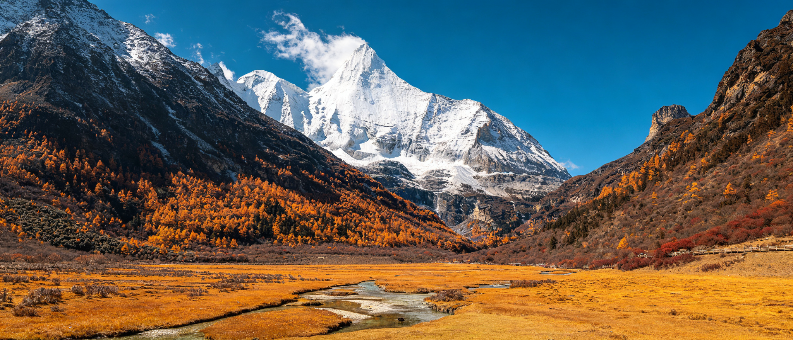
稻城亚丁位于四川省甘孜藏族自治州稻城县香格里拉镇，是国家 5A 级景区与国家级自然保护区。景区汇聚了雪山、冰川、峡谷、森林、高山草甸与冰蚀湖泊，被称作「香格里拉之魂」与「蓝色星球上的最后一片净土」。
核心是藏传佛教中的三座护法神山——仙乃日、央迈勇、夏诺多吉，以及雪水汇聚而成的珍珠海、牛奶海、五色海。景区内海拔从约 2900 米一路攀升至 4700 米，风景与海拔、体力、天气强相关，因此「怎么走、几月去」直接决定你能看到什么。
景区私家车不能进山，所有游客都要在游客中心换乘观光车，再按体力选择短线（轻松看神山倒影）或长线（徒步到牛奶海、五色海）——这是理解整个行程的关键。
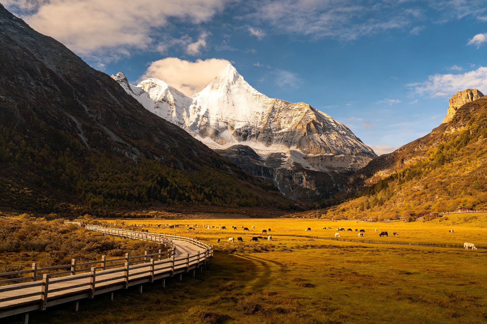
观世音菩萨，三神山中最高，珍珠海可拍其倒影
文殊菩萨，金字塔形雪峰，洛绒牛场正面仰望
金刚手菩萨，峰形尖锐，与央迈勇隔谷相望
稻城亚丁没有直达高铁，路程本身就是川西环线的一部分。建议循序渐进升高海拔，抵达后先用短线适应，第二天再冲长线。
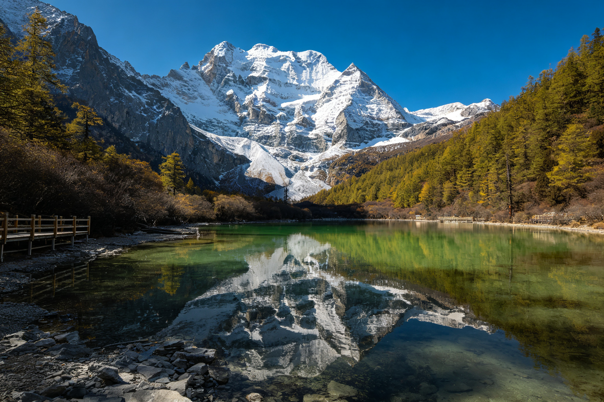
短线 · 轻松适应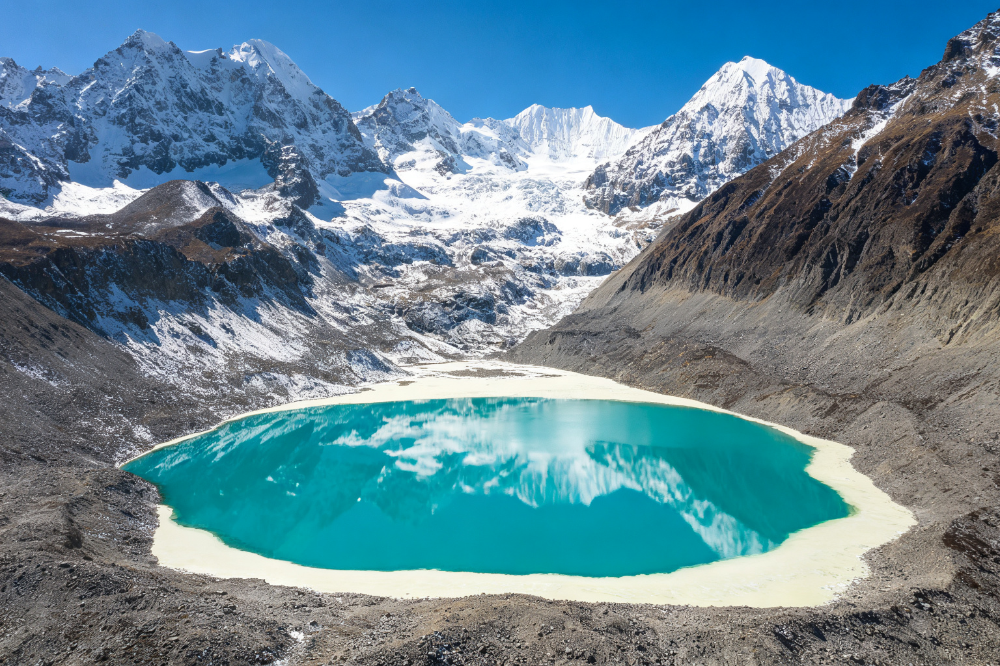
长线 · 核心精华经康定翻越折多山，沿途初见藏寨与草原，住宿新都桥，为海拔做第一轮适应。
翻卡子拉山、过理塘与海子山，傍晚抵达海拔相对较低的香格里拉镇，早休息、不洗澡、不饮酒。
上午进山走短线，看仙乃日倒影，控制节奏；下午回镇上休息，为第二天长线储备体力。
赶最早一班观光车进山，电瓶车到洛绒牛场后徒步登顶两座圣湖，下午按 14:30 截止时间前完成上行，原路下山。
时间充裕可拆成两天慢慢返程，也可向北接色达、四姑娘山等组成大环线。
飞机党怎么压缩：Day 1 飞抵后只在香格里拉镇休整适应，Day 2 走短线、Day 3 走长线、Day 4 飞回，全程 4 天即可；但切忌落地当天直接冲长线。门票与观光车票通常 3 天内有效、支持二次进山，两天分别走短线和长线最从容。
从稻城城北的白塔群到进山路上的冲古寺，从秋天限定的桑堆红草地到长线垭口猎猎经幡——它们共同构成完整的亚丁之旅。
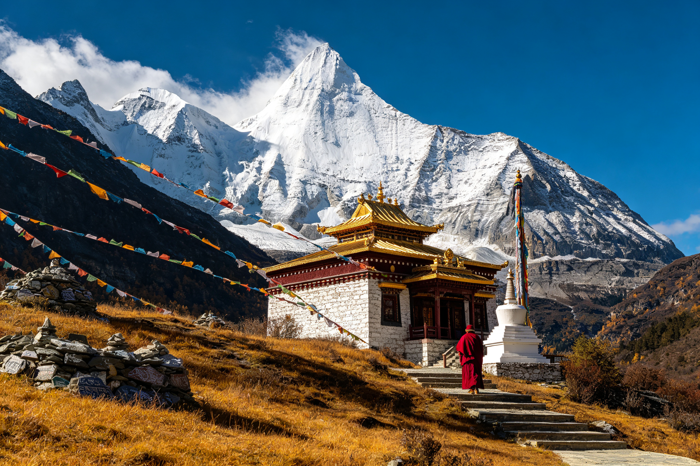
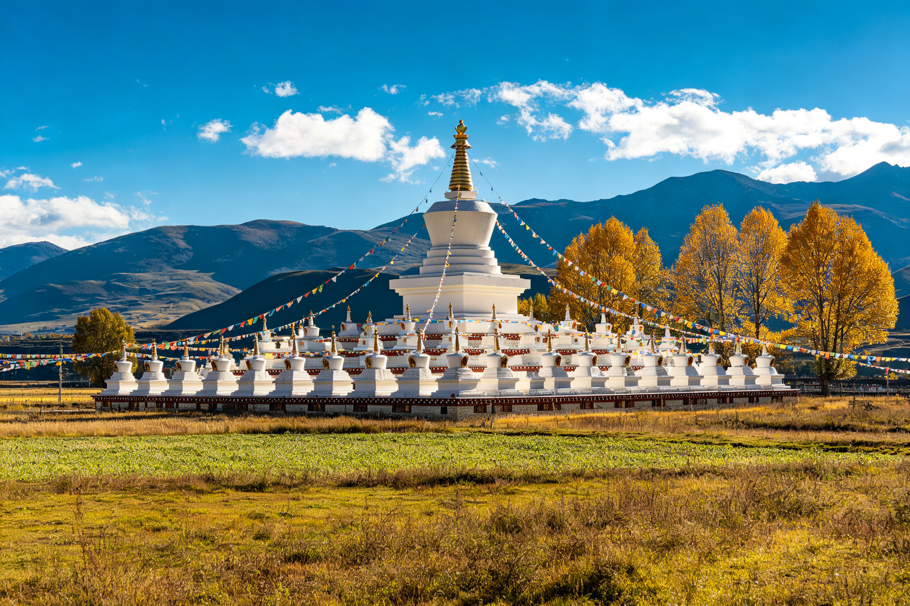
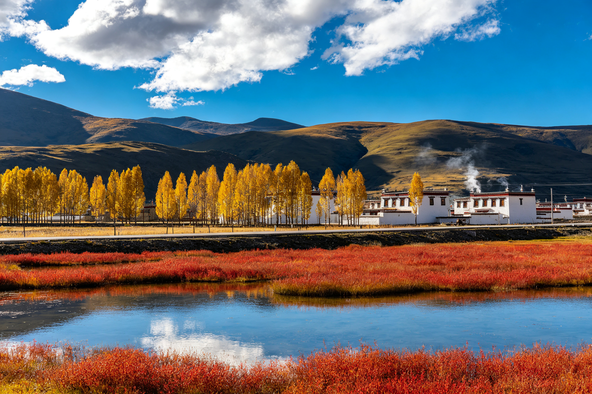
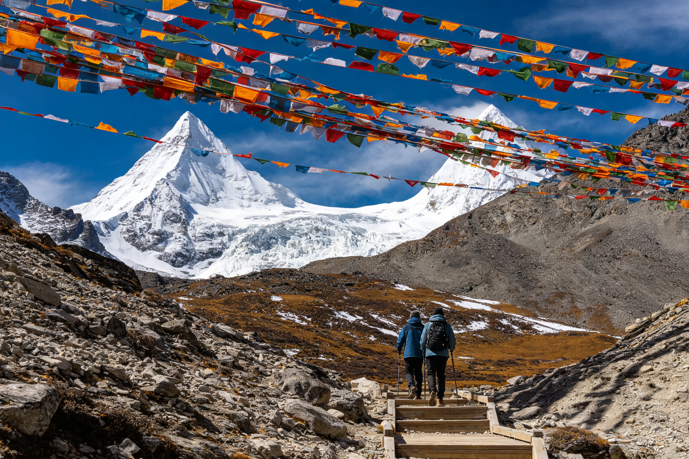
稻城亚丁的景色随月份剧烈变化：春天看花、夏天看绿、秋天看彩林、冬天看雪。雨季能否见到雪山、冬季长线是否封闭，是选季节时最该权衡的两件事。

春积雪渐融、草甸返青，4 月起野花次第开放，6 月中下旬迎来高山杜鹃最佳花期，雪山与花海同框。游客明显少于秋季，性价比高。
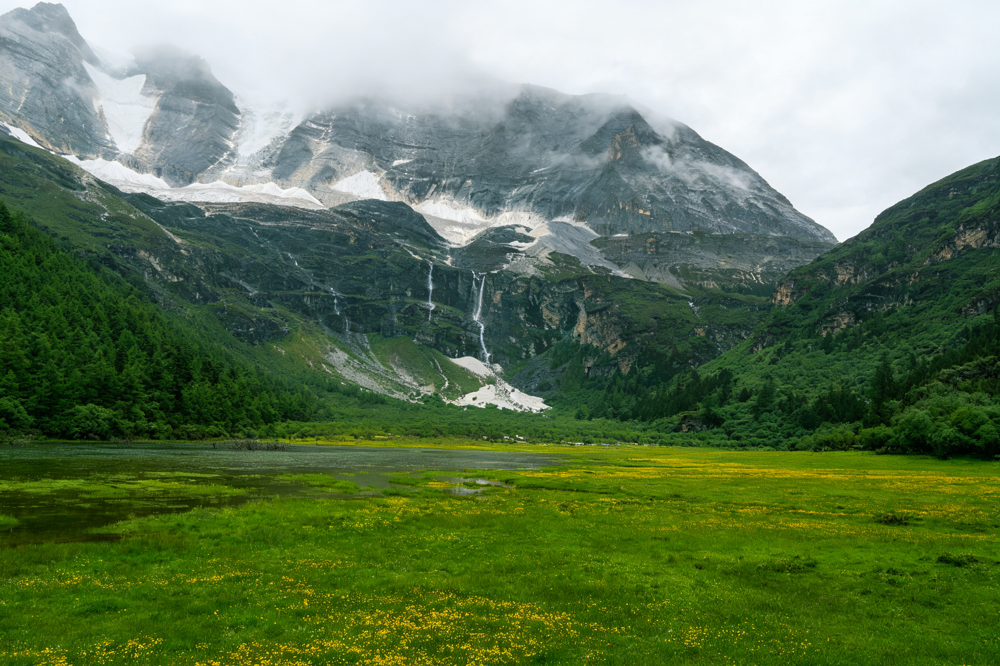
夏植被最茂盛、草甸全绿、野花点缀、气候相对温暖，是避暑胜地。但正值雨季，多云多雨，雪山常被云雾遮挡，海子饱和度也看天吃饭。
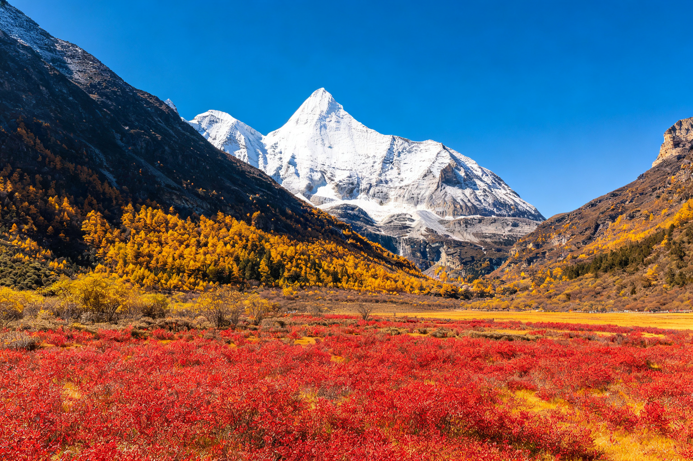
秋公认的颜值巅峰：青杨林鎏金、红草地似火，与洁白雪山、湛蓝海子撞色；雨季结束、晴天居多、能见度极高，牛奶海与五色海蓝得像宝石。
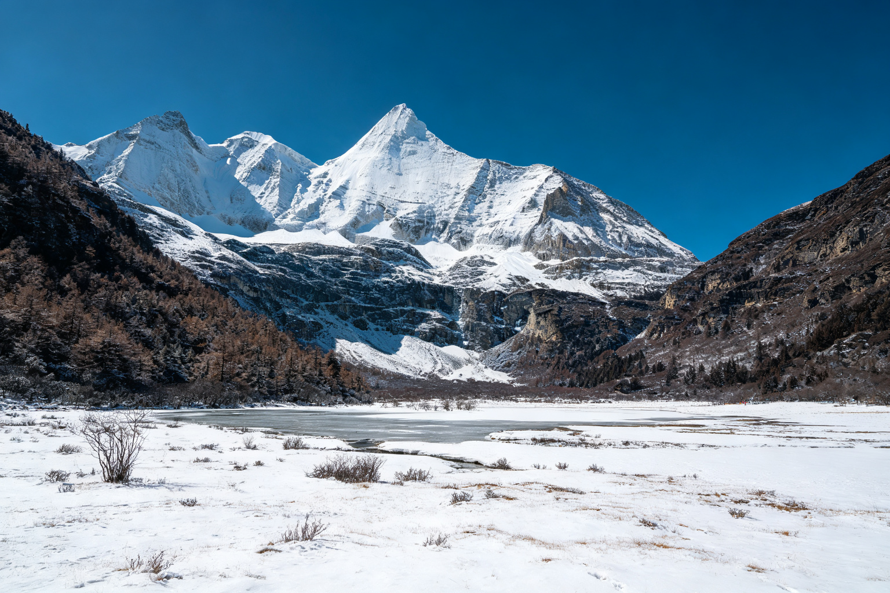
冬银装素裹、肃穆纯净，是另一种极致的雪域风光，门票住宿多为淡季价、游客稀少。但气温极低，长线高海拔路段常因积雪封闭。
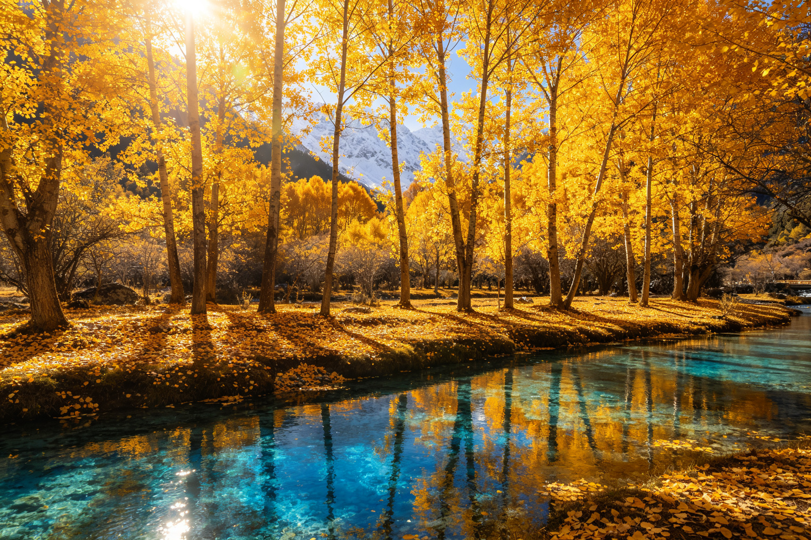
雨季刚过、秋意正浓，是彩林、红草地、雪山与圣湖唯一同时达到最佳状态的窗口，晴天概率与出片率全年最高。想避开国庆人潮，可优先选择下面两个时段：
稻城亚丁海拔高、天气多变，做好准备能显著提升体验、降低风险。以下信息整理自公开攻略，票价与优惠政策请以景区当年官方公告为准。
提示：2026 年景区曾推出阶段性「免大门票」及观光车 / 电瓶车优惠活动（多在 8–10 月），具体免费时段、是否含观光车请出行前通过「稻城亚丁景区」官方渠道核实，现场一般不售票。